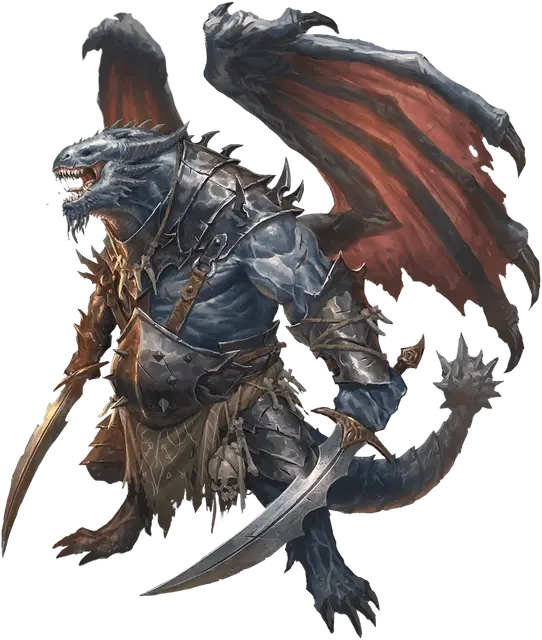

Драконид дредноут
Draconian Dreadnought
Большой Монстр, любое мировоззрение

Класс Доспеха 16 (природный доспех)
Хиты 57 (6к10 + 24)
Скорость 30 футов, летая 60 футов
| мод | спас | ||
|---|---|---|---|
| СИЛ | 18 | +4 | +6 |
| ЛОВ | 10 | +0 | +0 |
| ТЕЛ | 18 | +4 | +4 |
| мод | спас | ||
|---|---|---|---|
| ИНТ | 10 | +0 | +0 |
| МДР | 10 | +0 | +2 |
| ХАР | 10 | +0 | +0 |
Чувства тёмное зрение 60 футов, пассивное Восприятие 10
Языки Общий, Драконий
Опасность 4 (1100 опыта)
Бонус мастерства +2
Особенности
Предсмертные муки. Когда хиты драконида уменьшаются до 0, он вспыхивает пламенем и превращается в пепел. Каждое существо пределах 10 фт. от драконида, должно преуспеть в спасброске Ловкости Сл 13, иначе получит 10 (3к6) урона огнём.
Действия
Мультиатака. Драконид совершает две атаки Зазубренным мечом и одну атаку Хвостом.
Зазубренный меч. Рукопашная атака оружием: +6 к попаданию, досягаемость 5 фт., одна цель. Попадание: 13 (2к8+4) рубящего урона.
Хвост. . Рукопашная атака оружием: +6 к попаданию, досягаемость 5 фт., одна цель. Попадание: 8 (1к8+4) дробящего урона. Если целью является существо Большого размера или меньшее, оно должно преуспеть в спасброске Силы Сл 14, иначе станет сбитым с ног.
Реакции
Кража облика. После того, как драконид убьет Гуманоида Среднего размера или меньше, драконид может волшебным образом трансформироваться, чтобы выглядеть и чувствовать себя как это существо, сохраняя при этом свои характеристики (кроме своего размера). Эта трансформация длится до тех пор, пока драконид не умрет или не использует действие, чтобы окончить её.
Описание
Самыми крупными из драконидов являются дредноуты, которые рождаются из яиц серебряных, синих или сапфировых драконов. Они летят на могучих крыльях над полем боя туда, где идет самое ожесточенное сражение. Их магическая способность изменять свою внешность, чтобы подражать тем, кого они убили, позволяет им сеять смятение и отчаяние среди своих врагов. Когда бесстрашные убиты, их тела вспыхивают пламенем, сжигая все вокруг.
В мире Кринн драконианские бесстрашные, сформированные из серебряных драконьих яиц, называются сивакскими драконидами.
Дракониды - двуногие монстры, рожденные из драконьих яиц, которые были испорчены или искажены могущественной магией. Чаще всего эта развращение является преднамеренным актом, работой честолюбивого тирана, стремящегося превратить украденные яйца в драконидскую армию. Одно испорченное яйцо дает несколько драконидов одного и того же вида. На первый взгляд драконида можно принять за драконорожденного, хотя у большинства видов драконидов есть крылья.
Когда дракониды умирают, они не уходят тихо. Вместо этого их безжизненные тела высвобождают последний акт магического неистовства.